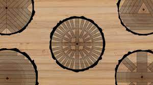

El corte tangencial se realiza de forma paralela al eje longitudinal, perpendicular al radio y a su vez tangencial a los aros de crecimiento. Permitiendo obtener una visión absoluta de las aristas naturales de la madera. Aunque no es uno de los cortes más resistentes si ofrece la mayor vistosidad y belleza.
